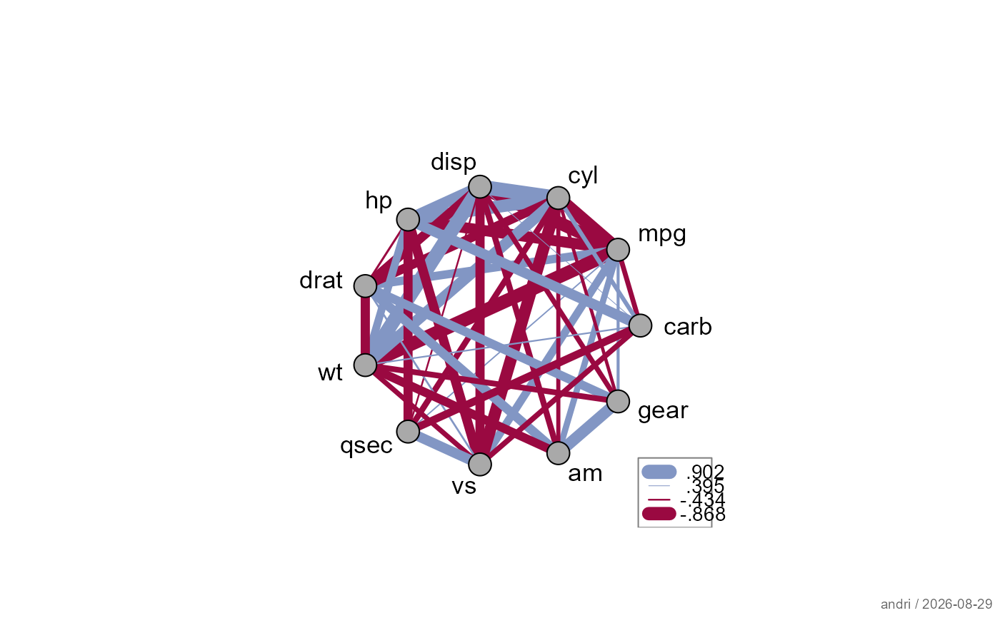

Replaces entries in a symmetric matrix (typically a correlation matrix)
with NA wherever the corresponding p-value exceeds a significance
threshold - retaining only the statistically supported associations.
Designed as a pre-processing step for plotWeb and
plotCor.
Usage
keepSig(
m,
p = NULL,
data = NULL,
sig.level = 0.05,
method = c("pearson", "spearman", "kendall"),
diag = TRUE
)Arguments
- m
a symmetric numeric matrix. Typically the output of
cor, but any symmetric matrix of effect sizes or association measures is accepted.- p
a matrix of p-values of the same dimension as
m. IfNULL(default), p-values are computed from pairwise correlation tests on the columns ofdata(requiresdata).- data
an optional numeric data frame or matrix. Used to compute
pwhenp = NULL. Ignored ifpis supplied.- sig.level
numeric; significance threshold. Entries where
p > sig.levelare replaced byNA. Default0.05.- method
character; the correlation test method passed to
cor.testwhen computing p-values fromdata. One of"pearson"(default),"spearman", or"kendall".- diag
logical; if
TRUE(default), the diagonal is kept as-is (typically 1 for correlation matrices). IfFALSE, the diagonal is also set toNA.
See also
pharos::plotWeb, pharos::plotCor, lumen::corTest, stats::cor.test
Other assoc.continuous:
corPart(),
corPolychor(),
findCorrX(),
hoeffdingD(),
pearsonCor(),
spearmanCor()
Examples
# compute p-values on the fly from the raw data
keepSig(cor(mtcars), data = mtcars)
#> mpg cyl disp hp drat wt
#> mpg 1.0000000 -0.8521620 -0.8475514 -0.7761684 0.6811719 -0.8676594
#> cyl -0.8521620 1.0000000 0.9020329 0.8324475 -0.6999381 0.7824958
#> disp -0.8475514 0.9020329 1.0000000 0.7909486 -0.7102139 0.8879799
#> hp -0.7761684 0.8324475 0.7909486 1.0000000 -0.4487591 0.6587479
#> drat 0.6811719 -0.6999381 -0.7102139 -0.4487591 1.0000000 -0.7124406
#> wt -0.8676594 0.7824958 0.8879799 0.6587479 -0.7124406 1.0000000
#> qsec 0.4186840 -0.5912421 -0.4336979 -0.7082234 NA NA
#> vs 0.6640389 -0.8108118 -0.7104159 -0.7230967 0.4402785 -0.5549157
#> am 0.5998324 -0.5226070 -0.5912270 NA 0.7127111 -0.6924953
#> gear 0.4802848 -0.4926866 -0.5555692 NA 0.6996101 -0.5832870
#> carb -0.5509251 0.5269883 0.3949769 0.7498125 NA 0.4276059
#> qsec vs am gear carb
#> mpg 0.4186840 0.6640389 0.5998324 0.4802848 -0.5509251
#> cyl -0.5912421 -0.8108118 -0.5226070 -0.4926866 0.5269883
#> disp -0.4336979 -0.7104159 -0.5912270 -0.5555692 0.3949769
#> hp -0.7082234 -0.7230967 NA NA 0.7498125
#> drat NA 0.4402785 0.7127111 0.6996101 NA
#> wt NA -0.5549157 -0.6924953 -0.5832870 0.4276059
#> qsec 1.0000000 0.7445354 NA NA -0.6562492
#> vs 0.7445354 1.0000000 NA NA -0.5696071
#> am NA NA 1.0000000 0.7940588 NA
#> gear NA NA 0.7940588 1.0000000 NA
#> carb -0.6562492 -0.5696071 NA NA 1.0000000
# stricter threshold, and drop the diagonal as well
keepSig(cor(swiss), data = swiss, sig.level = 0.01, diag = FALSE)
#> Fertility Agriculture Examination Education Catholic
#> Fertility NA NA -0.6458827 -0.6637889 0.4636847
#> Agriculture NA NA -0.6865422 -0.6395225 0.4010951
#> Examination -0.6458827 -0.6865422 NA 0.6984153 -0.5727418
#> Education -0.6637889 -0.6395225 0.6984153 NA NA
#> Catholic 0.4636847 0.4010951 -0.5727418 NA NA
#> Infant.Mortality 0.4165560 NA NA NA NA
#> Infant.Mortality
#> Fertility 0.416556
#> Agriculture NA
#> Examination NA
#> Education NA
#> Catholic NA
#> Infant.Mortality NA
# the intended use is as a pre-processing step for the plots
pharos::plotWeb(keepSig(cor(mtcars), data = mtcars))
 # supply a pre-computed p-value matrix
m <- cor(mtcars)
p <- outer(
(vars <- colnames(mtcars)), vars,
Vectorize(function(v1, v2)
cor.test(mtcars[[v1]], mtcars[[v2]])$p.value)
)
dimnames(p) <- list(vars, vars)
plotWeb(keepSig(m, p = p))
# supply a pre-computed p-value matrix
m <- cor(mtcars)
p <- outer(
(vars <- colnames(mtcars)), vars,
Vectorize(function(v1, v2)
cor.test(mtcars[[v1]], mtcars[[v2]])$p.value)
)
dimnames(p) <- list(vars, vars)
plotWeb(keepSig(m, p = p))
